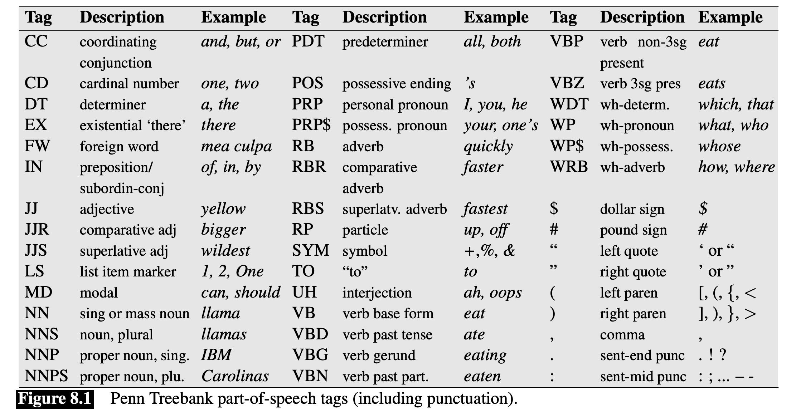
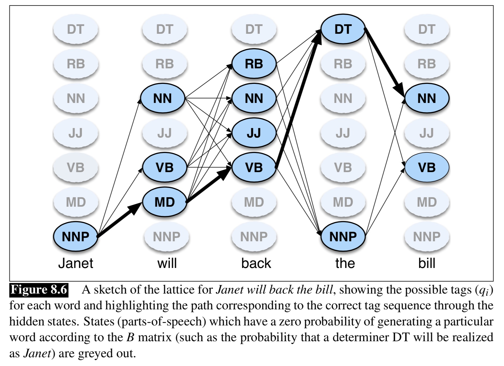

Why computers can’t POS tag like humans
Creating a corpus for POS-tagging use
Part-of-Speech Ambiguity
How does HMM-based POS tagging work?
POS Tagging is hard
We understand the functional distinction between an adverb and a preposition
We can talk within a certain language, but understand when the rules change
We know the semantics of a given word
“Can you make it plural? If so, it’s a noun!”
“Can you inflect it? If so, it’s a verb!”
“If you can use a comparative construction, it’s probably an adjective!”
“Pronouns can substitute for noun phrases”
“Is this a relationship a squirrel can have with a tree? Then probably Preposition!”
“Sure, rotates is the plural of ‘rotate’, so it’s a noun”
“I treed, therefore, tree is a verb”
“This slide is computerer than the last one”
“What the heck is a noun phrase, anyways?”
“Squirrel? Tree? Huh?”
This is partly language specific
What POS categories exist
What additional detail would be helpful in prediction
Partly based on what corpora are available

(Table from Jurafsky and Martin ‘Speech and Language Processing’ 3e)
Teach some annotators the POS-tagging system
Run a sample POS-tagging system to get suggestions
Have the annotators hand correct them
On/IN an/DT exceptionally/RB hot/JJ evening/NN early/RB in/IN July/NNP a/DT young/JJ man/NN came/VBD out/RP of/IN the/DT garret/NN in/IN which/WDT he/PRP lodged/VBN and/CC walked/VBD slowly/RB ,/, as/RB though/IN in/IN hesitation/NN ,/, towards/IN a/DT bridge/NN ./.
All example tagging from today comes from the Stanford Parser
You don’t need to do this.
Which is good.
POS tagging is super boring
How much uncertainty there is about the part of speech of a given word
‘Funniest’
‘hesitantly’
‘Sharon’
Around 85% of words are unambiguous in terms of POS
‘in’
‘a’
‘between’
‘Marshall’
‘Demonstrated’
‘sink’
‘that’
‘lift’
‘will’
“Let the tag of word X be the most likely tag of word X in our corpus”
Tagging is just a lookup table
‘fly’ is most frequently a verb
Therefore, every instance of ‘fly’ is a verb
This provides a ‘baseline’ performance
Accuracy here is ‘percentage of tags correctly labeled’
Most Frequent Tag gets 92% accuracy on WSJ data!
If we want to use something more complicated, you have to do better than this.
Capitalization
Prefixes and suffixes are helpful.
‘Ungerplinked’
‘Flabertibly’
‘Skwerking’
X-Y constructions are usually adjectives
“New-found”
“46-year”
“Under-utilized”
A machine learning process which models a series of observations, with the assumption that there’s some ‘hidden’ state which helps to predict the observations
The probability of the current state is based ONLY on the previous state
The model does not have long term ‘memory’
The model cannot look ahead
This is a left-to-right walk through the data
Observations: The series of words in the text
States: The parts of speech of those words
‘Look at the sequence of words, to help predict which part of speech corresponds to this word’
1: Calculate the probabilities of parts-of-speech (and sequences) from a corpus
2: Tokenize the input data
3: Using the input, decide the most likely sequence of parts-of-speech
Observation probability: The probability that a word has a given tag
Transition Probability: The probability of one POS, given the prior one
Count the number of instances of “will” in the corpus
Count the number of times that it’s a modal verb
Count the number of times it’s a noun
Count the number of times it’s a proper noun
… and so on …
Turn these numbers into P(modal|will) (and so on)
Words that have little ambiguity will have high probabilities for one category
Words that have lots of ambiguity may have nearly equivalent probabilties across several categories
Count the number of instances of modal in the corpus
Count the number of times modal follows pronoun
Count the number of times modal follows noun
Count the number of times modal follows verb
… and so on …
Turn these numbers into P(modal|Previous pronoun) (and so on)
How likely is a Determiner to be followed by a Noun?
How likely is a preposition to be followed by a determiner?
How likely is a preposition to be followed by a proper noun?
How likely is a modal verb (e.g. ‘will’) to be followed by a Noun?
Then we tokenize
Then…
“Given this sequence of words, what’s the most likely sequence of POS tags”
This uses the Viterbi Algorithm
We know the probability of a given state (POS tag) given each word
We know the probability of a given state (POS tag) given the prior state (POS tag)
We can calculate the most probable state for each word in light of those two facts
What is the most likely string of states that gets us through the entire sentence?

Both with respect to individual words’ probabilities
… and with respect to the likely sequence of tags
This gives us the best of both worlds!
Cool!
the/DT three/CD cute/JJ cats/NNS made/VBN will/MD sit/VB back/RP in/IN awe/NN
sit/VB cute/JJ three/CD awe/NN the/DT will/NN back/RB made/VBN in/IN cats/NNS
‘will’ goes from modal to noun
‘back’ goes from particle to adverb
Baseline (“Most Frequent Class”): ~92% accuracy
Hidden Markov Model POS Tagging: ~97% accuracy
That’s pretty good!
This is one of the ‘flagship’ tasks for HMMs
Other approaches exist
Neural Networks didn’t win, for once!
(Well, OK, they might win by a few decimal places)
… Why only 97% accuracy?
You can have words that show up in uninformative contexts
Words that are being mentioned, rather than used, are hard to POS-tag
She/PRP said/VBD `/`` bear/NN ‘/’’ was/VBD her/PRP$ favorite/JJ word/NN ./.
Roger/NNP texted/VBD me/PRP `/`` back/VBP ‘/’’
I/PRP bought/VBD the/DT The/NNP Pianist/NNP DVD/NN
I/PRP bought/VBD the/DT the/DT pianist/NN DVD/NN
Maria/NNP was/VBD entertaining/JJ last/JJ night/NN
I/PRP saw/VBD the/DT official/NN take/VBP from/IN the/DT store/NN ./.
You/PRP should/MD ask/VB a/DT Smith/NNP ./.
I/PRP hate/VBP bridging/VBG gaps/NNS ./.
Capitalization and Morphology are the best tools
You can rely mostly on the transitional probability within the model
yeet/NN
yeeting/NN
yeeted/JJ
I/PRP yeet/VBP when/WRB I/PRP throw/VBP empty/JJ cans/NNS
lit/UH
That/DT phonetics/NNS lab/NN meeting/NN was/VBD lit/JJ
I/PRP ’m/VBP studying/VBG English/NNP Lit/NNP
They/PRP lit/VBD the/DT beacon/NN of/IN Amon/NNP Din/NNP to/TO summon/VB the/DT Rohirrim/NNP
I/PRP saw/VBD the/DT sign/NN
I/PRP saw/VBD the/DT sign/NN whenever/WRB I/PRP need/VBP to/TO test/VB the/DT cutting/VBG feel/NN of/IN a/DT new/JJ blade/NN
I/PRP bought/VBD a/DT saw/NN
Helps disambiguate word senses
Helps identify verbs vs. the things the verbs are acting on
Provides the basis for syntactic parsing!
Computers can’t use meaning or language intuitions to POS-tag
POS-tagged data is valuable
Words can be more or less ambiguous in terms of POS tags
HMMs work great for POS Tagging
But POS tagging is still hard!